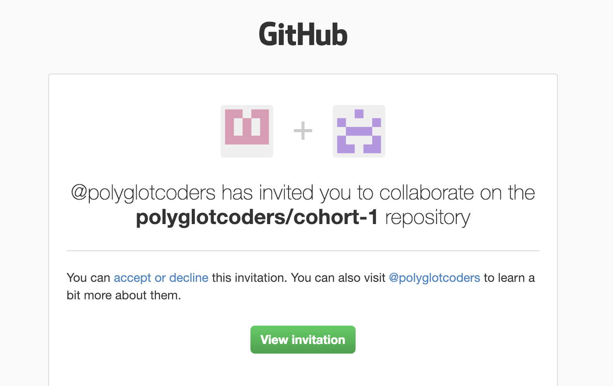
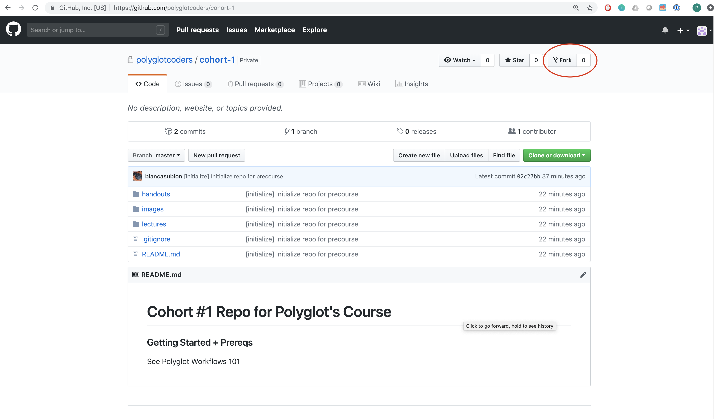
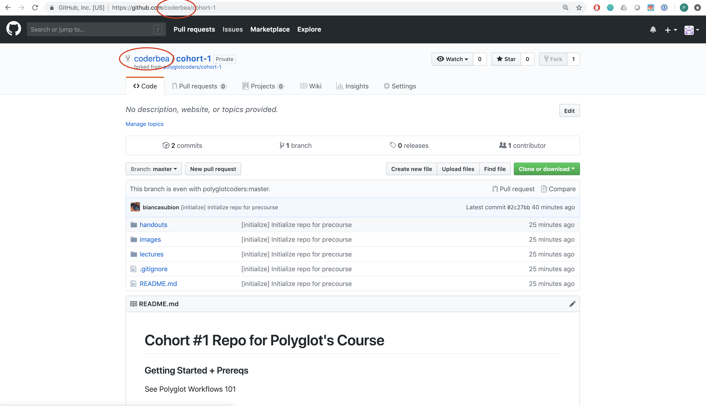
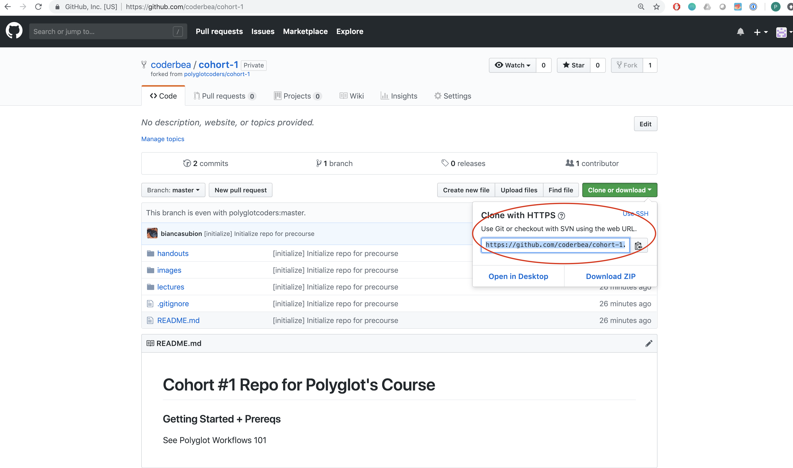

lab 7 Signup for Github, Fork Repo, and Polyglot workflow
Now that we set up git locally, we want to sign up for a github account online. Github allows you to “push” your code up online. To do that, your local project should be a git repo. We’ll learn more about this in class, but for now, we’ll be forking a repo, then cloning it locally.
Goals
- Create a github account, request access to Polyglot’s repo, and retrieve your own fork
- Understand what remote refers to
- Remember what commands you have to run when you make a change and want everybody to see
- Remember what commands you have to run when you want to get the latest lectures and handouts
Definitions
- Repository/Repo: a folder containing your project’s files and folders
Go to github.com
- Make an account at https://github.com/
- Use the email you set up in the last lab
Send your github username
- Go to the #githubaccounts channel on slack (channel) and send your username to gain access to the repo. You will be notified via email when you receive your invite to the repo.
It should look like this

Fork the Repository
When we “fork” a repo, we make a copy of someone else’s repo and add it to our own account
- Go to https://github.com/polyglotcoders/cohort-1/
- Press
Fork

You should have been redirected to a a new url. The repo should now be on your account, rather than Polyglot’s

Clone the Repository
Cloning a repository to us means we take a repository from the internet and make a copy in our local computer.
- Press
Clone or download - Press
Use HTTPS - Copy the code

Add a remote “upstream”
Definitions
- Remote: Think of it as a channel. There are multiple copies of each “repo” depending on the owner. For your own, we go to channel/remote “origin”. For Polyglot’s own repo, we’ll call it “upstream”
Now open up iterm2 (cmd + space then type iterm2)
Execute:
cd mkdir Development cd Development mkdir polyglot cd polyglot git clone https://github.com/coderbea/cohort-1.git cd cohort-1 git remote -v git remote add upstream https://github.com/polyglotcoders/cohort-1.github git remote -v
Confirm you get something similar to below:
Output:
$ git remote -vorigin https://github.com/coderbea/cohort-1.git (fetch)
origin https://github.com/coderbea/cohort-1.git (push)
$ git remote add upstream https://github.com/polyglotcoders/cohort-1.github
$ git remote -v
origin https://github.com/coderbea/cohort-1.git (fetch)
origin https://github.com/coderbea/cohort-1.git (push)
upstream https://github.com/polyglotcoders/cohort-1.github (fetch)
upstream https://github.com/polyglotcoders/cohort-1.github (push)
Make a change
Now that you have a clone of your fork of Poylglot’s “cohort-1” repo, make a change!
Execute:
mkdir sandbox cd sandbox pwd ls sublime hello.py
Output:
$ pwd/Users/bea/Development/polyglot/cohort-1$ lshandouts lectures images sandbox
hello_world.py
# A sublime text window should have opened up. Write anything
# you want in it! I will put this.
print("Hello World!")
Now save the file!
Check the status of the repo and changes you made
Definitions
- Staging: A list of changes to get committed. Imagine you’re packing up stuff in a box.
Sometimes you take things out, sometimes you put it in. The box is the staging area. - Commit: A list of changes with a name for the group of changes. You put the lid on the box
and labeled it “Ballet stuff”
Execute:
git status
Output:
$ git statusOn branch master
nothing to commit, working tree clean
Add the “untracked files” to staging
Execute:
git add . git status
Output:
$ git add .$ git statusOn branch master
nothing to commit, working tree clean
Commit the changes
Commit the changes with a message! AKA “ballet stuff”
Execute:
git commit -m "[workflows] add a new helloworld file"
Output:
$ git commit -m “[workflows] add a new helloworld file”On branch master
nothing to commit, working tree clean
Push the changes
Definitions
- Push: Remember when you cloned the repo and added a remote “upstream”? Well now
we’re going to “push” the files to that url on origin! So now your code will be online
and on github on your own repo.
Let’s look at our remotes
Execute:
git remote -v
Output:
$ git remote -vorigin https://github.com/coderbea/cohort-1.git (fetch)
origin https://github.com/coderbea/cohort-1.git (push)
upstream https://github.com/polyglotcoders/cohort-1.github (fetch)
upstream https://github.com/polyglotcoders/cohort-1.github (push)
workflows https://github.com/polyglotcoders/polyglot-workflows.git (fetch)
workflows https://github.com/polyglotcoders/polyglot-workflows.git (push)
If you copy paste that URL, without the .git / .github on the end, it’ll send you directly
to the either your own (origin) fork of polyglot’s repo, or polyglot’s (upstream) repo.
Make sure you push to origin always! You only pull from upstream, but you push all your
changes to origin
Execute:
git push origin master
Output:
$ git push origin masterTo https://github.com/coderbea/cohort-1.git 02c27bb..be543f1 master → master
Take a look at your change online!
Remember, pushing to origin means we push it to the url listed on git remote -v for origin. Go to that URL, which is just your fork of the repo
Summary!
You’ll be surprised to learn that our git “workflow” and most of the commands we’ll use will consist of the below.
Execute:
git pull upstream master #get the latest code from polyglot's master "branch" <fill out handout / make a change> git diff # Optional. See all the changes you made git status # Optional. See changes before adding it to "staging" git add . # Add all changes to "staging" (like a draft, no saving) git status # Optional. Confirm that the changes are staged git commit -m "Finished handout 1" # commit all changes (saying yes, I want to name and log this change to my computer) git push origin master # push changes online to github (I want to save it on the internet!)
If we take out all the optional code:
Execute:
git pull upstream master # Get all changes from polyglot's offical repo <fill out handout / make a change> # Make all changes at "local" git add . # Add all changes to "staging" git commit -m "Finished handout 1" # Add all changes to "commited" git push origin master